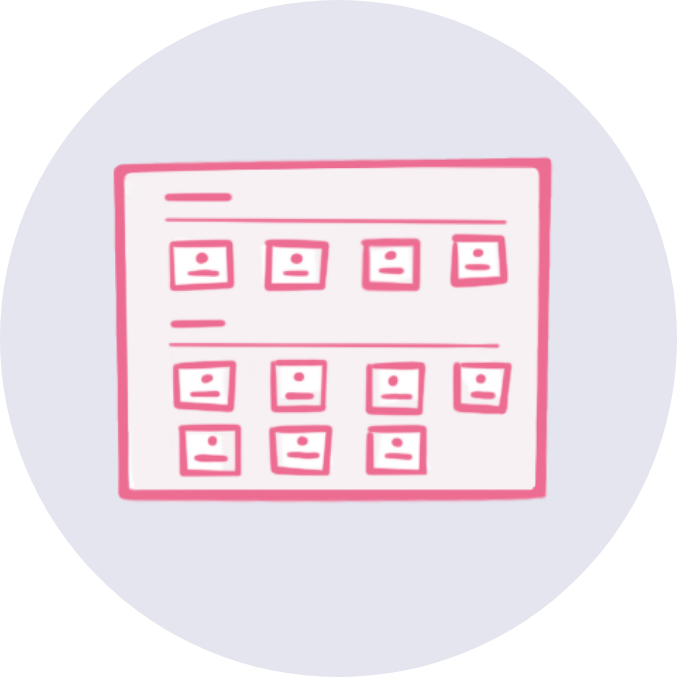
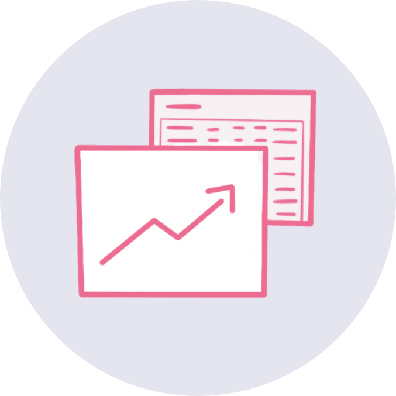

Adela is a mentor that works with students who need extra help in math
class. She meets with them once a week, one-on-one or in small groups.
Adela's students use an online program that they use to practice math
problems and learn concepts, both in school and at home. Adela works
with each student to set personal goals for the number of activities
they'll complete and the progress they'll make. PL² connects with
the online program to help Adela track her students' learning.
PL² Features

Dashboard
PL² allows mentors to view all their students and set
individual goals based on their status.
Resources
PL² recommends resources to the mentors based on the status of
their students.

Tracking Progress
Using PL², mentors can track how their students' ed-tech data
changes over time.
PL² Instructional Videos
Below is an overview video of PL² (March 2020) covering the
mentor dashboard, individual student pages, and resources. PL² is
still in development and is continuously undergoing changes —
please check back or reach out about future updates!
PL² Overview
This next video covers the use of the PL² Resource Assistant. With
the Resource Assistant, you can choose to answer one or more
questions about your student, the answers of which are used to guide you
to a resource that you can use to help the student. (Added March 2020)
Using the Resource Assistant
This next series of short videos cover different aspects of PL² :
completing the Foundational Questions as you get to know your
student, navigating student progress using their EdTech data,
adding Reflections after a session with your student or to plan
for your next session, navigating and
assigning Resources to your students, and
creating Resources so that others can use tools or supports that
you found helpful. (Added April 2020)
Foundational Questions
Navigating student progress
Reflections
Navigating resources
Assigning and using resources
Creating resources
As a PL² Admin you have additional functionality available
in the app. This video covers those features. (Added March 2020)
Features available to PL² Admin users
We've compiled several screenshots of other parts in PL², including
explanations for different features: